Værktøjer og programmer jeg har brugt i projektet:


Fotografering, billederedigering og grafiske elementer - liiteGuard
Under min praktik hos liiteGuard har jeg arbejdet med både fotografering og billederedigering med fokus på visuel æstetik og digitale løsninger.
Jeg har planlagt og udviklet fotoshoots ud fra moodboards og kreative idéer for at skabe et gennemført visuelt udtryk.
Billederne nedenfor er fra et fotoshoot, hvor liiteGuards Hyperlight strømper blev fotograferet i forskellige miljøer og vinkler.
Jeg har arbejdet med både miljøbilleder af produkter og klassiske produktfotos til hjemmesidebrug. Gennem hele processen har jeg selv stået for redigering af billederne fra rå filer til færdige resultater. Her har jeg blandt andet arbejdet med lys, skygger, farver, skalering og formatering, så billederne passer til det ønskede format og den visuelle identitet på hjemmesiden.
I redigeringsprocessen har jeg også haft fokus på komposition og visuel balance, hvor jeg blandt andet har arbejdet med principper som “rule of thirds” for at skabe mere harmoniske og professionelle billeder.
Jeg er god til at se muligheder i billederne og tilpasse dem, så de fungerer bedst muligt både visuelt og funktionelt i den digitale kontekst.
Se nogle af mine billeder i brug på liiteGuards hjemmeside her
Værktøjer og programmer jeg har brugt i projektet:
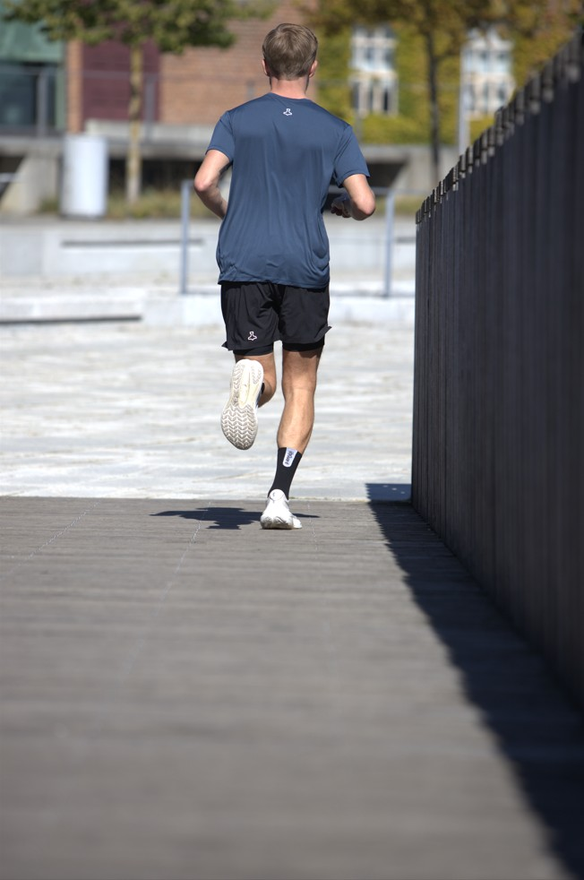
⭢
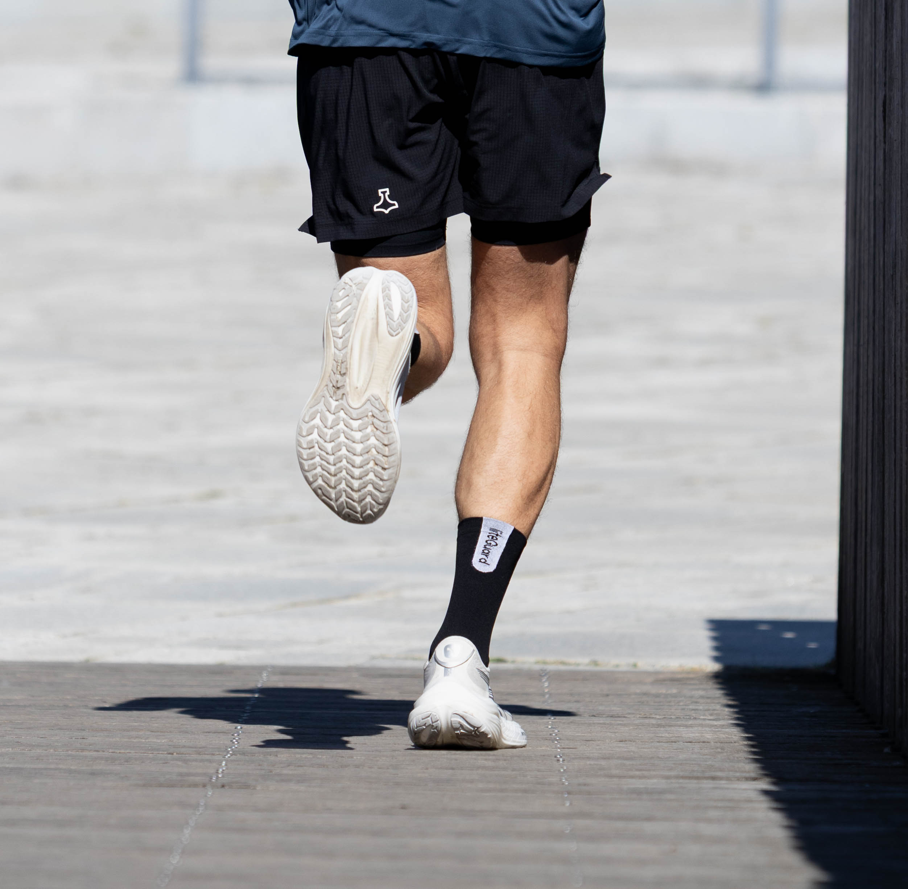
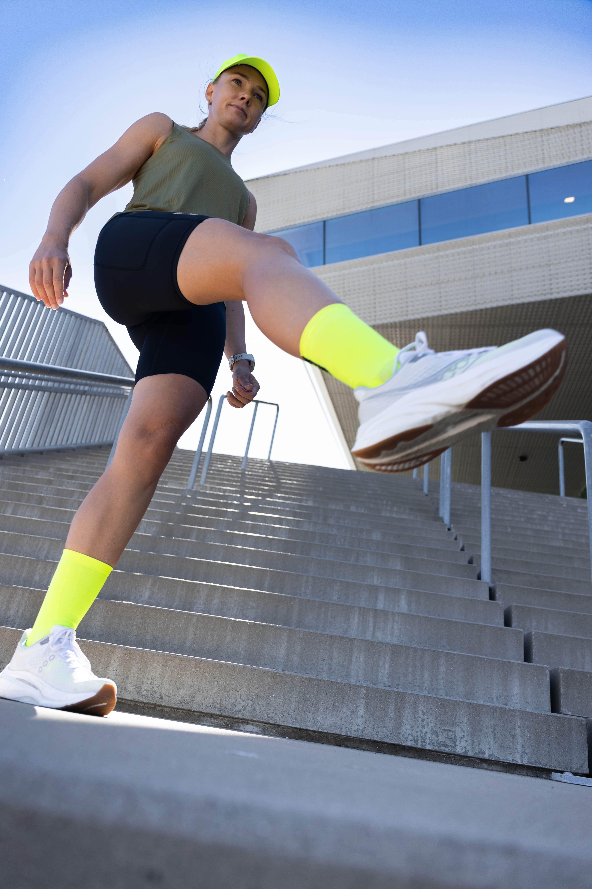
⭢
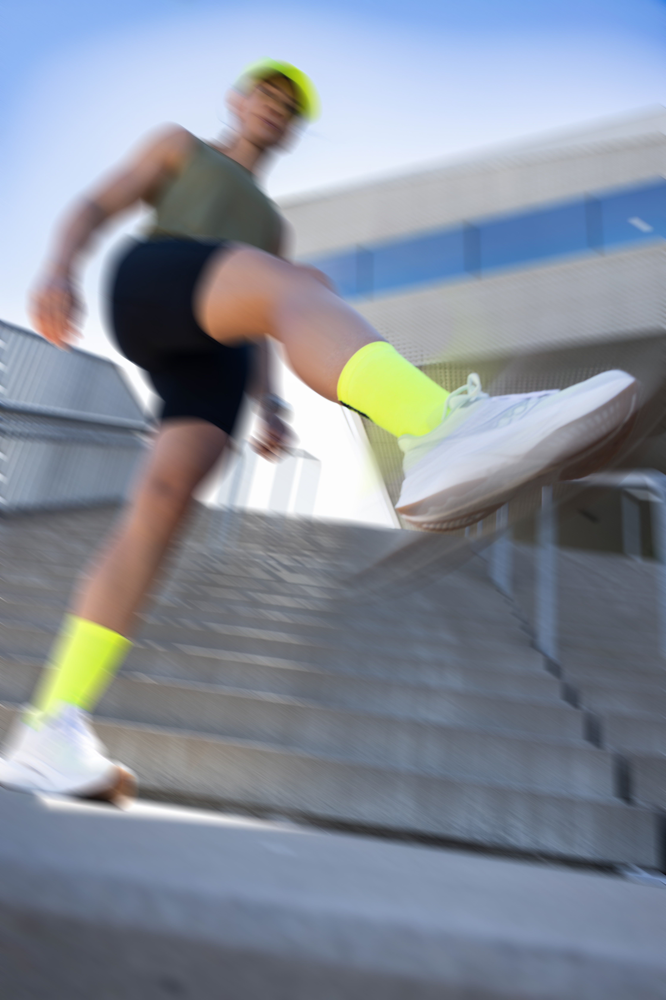
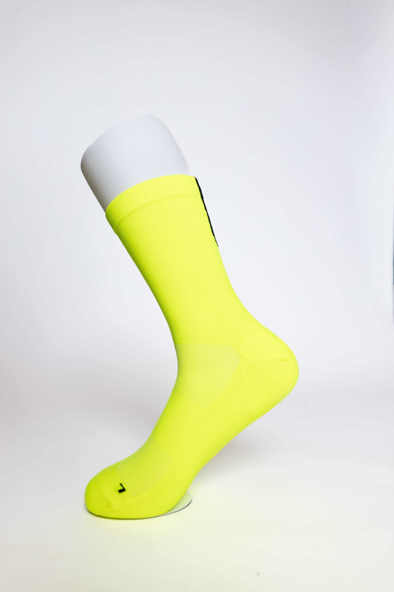
⭢
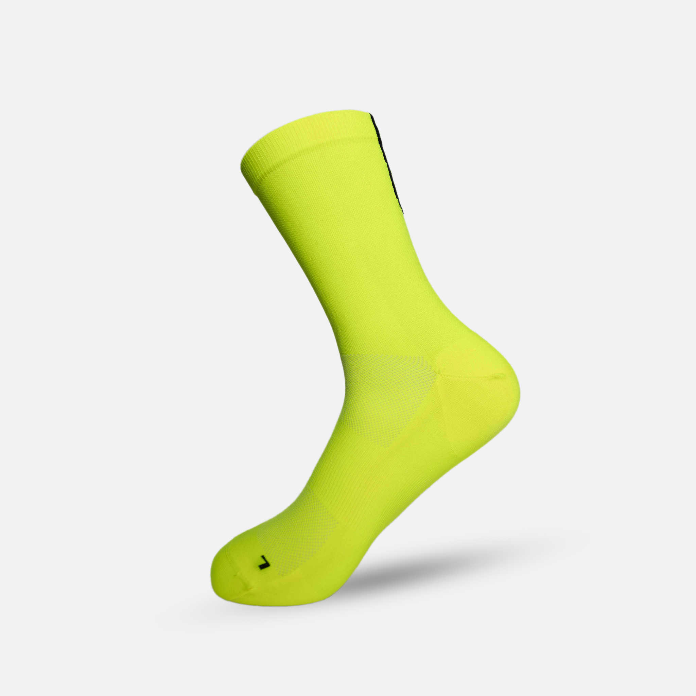
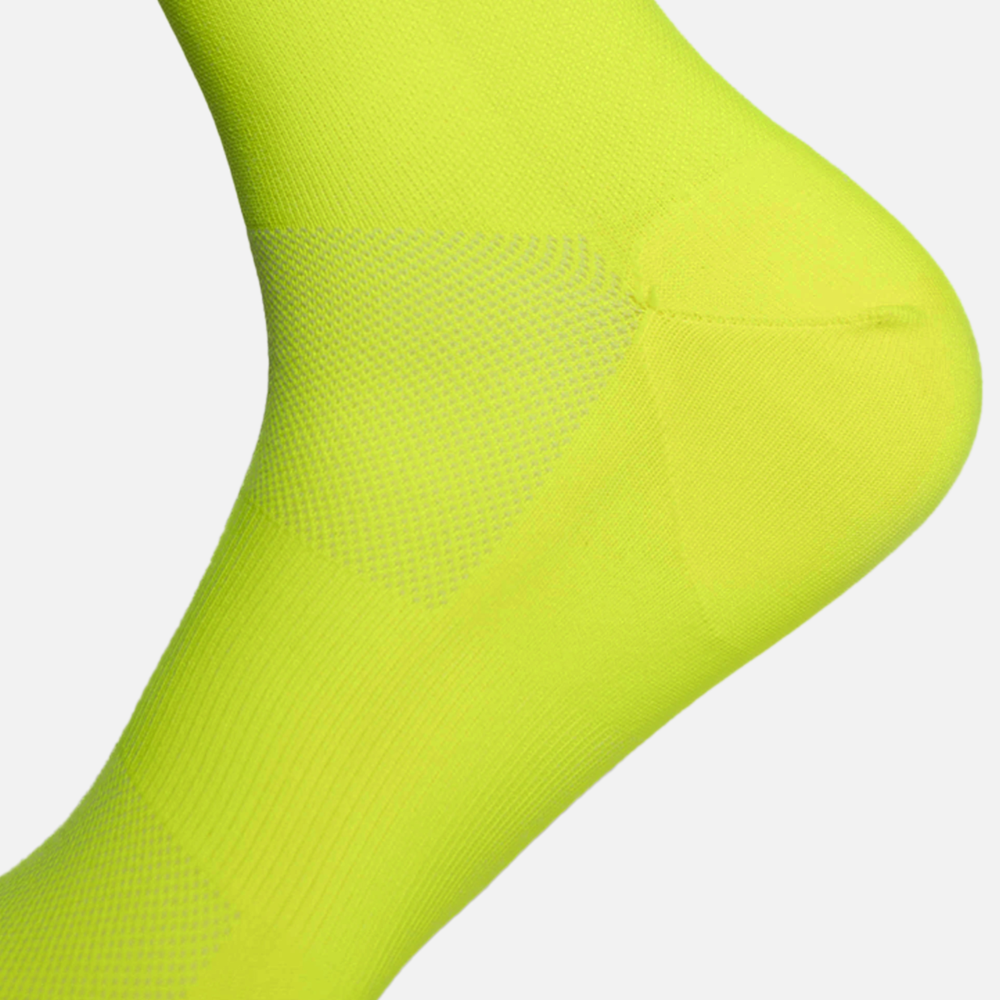

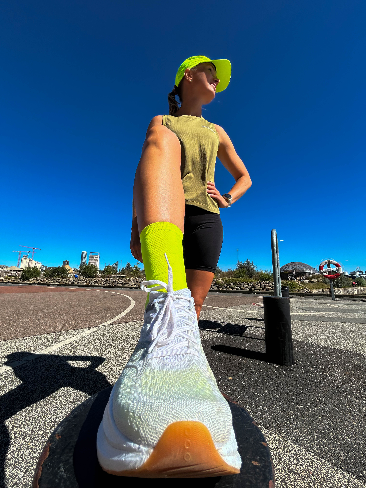
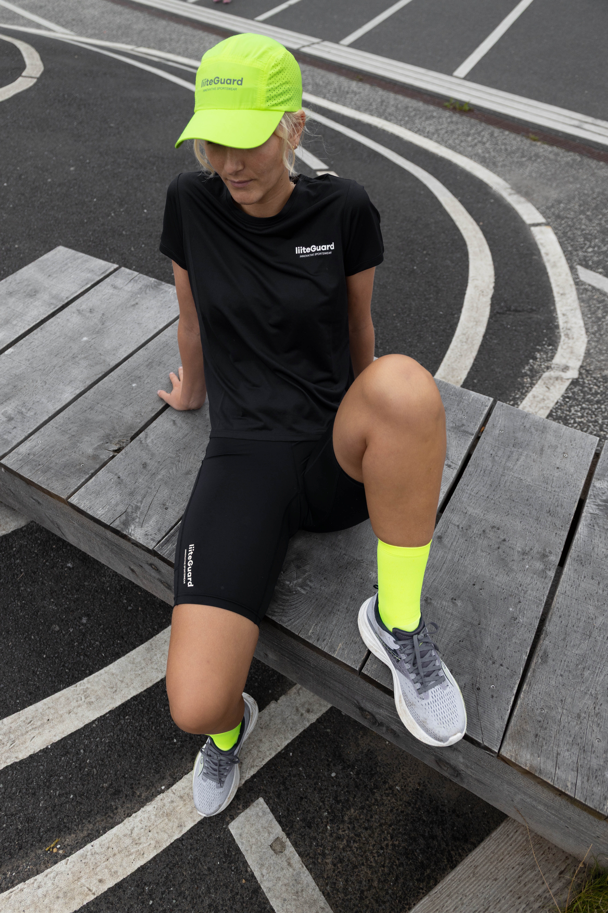
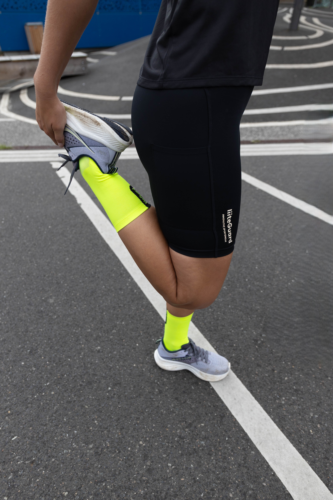
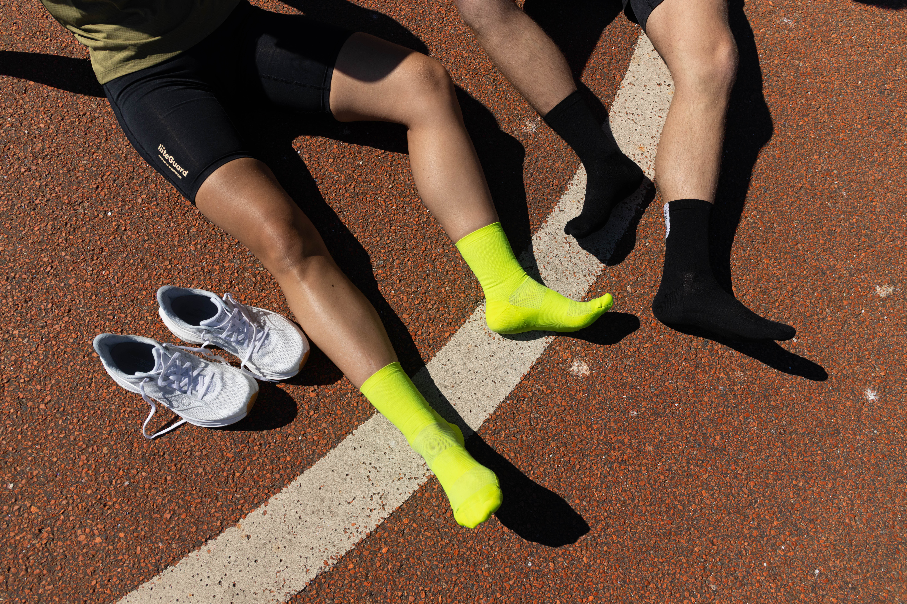
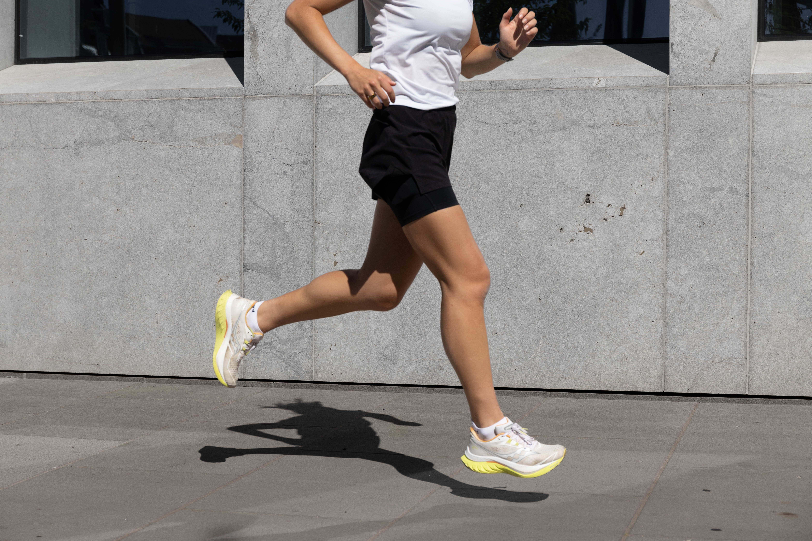
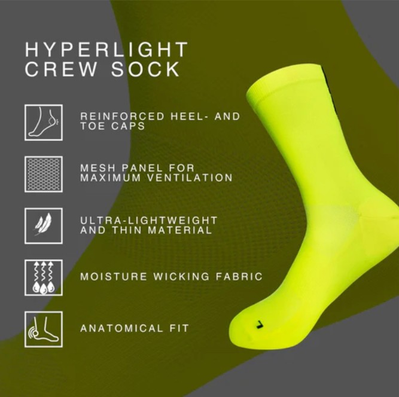
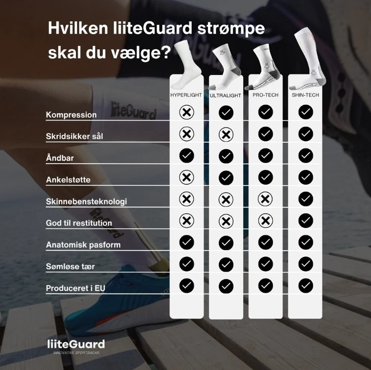